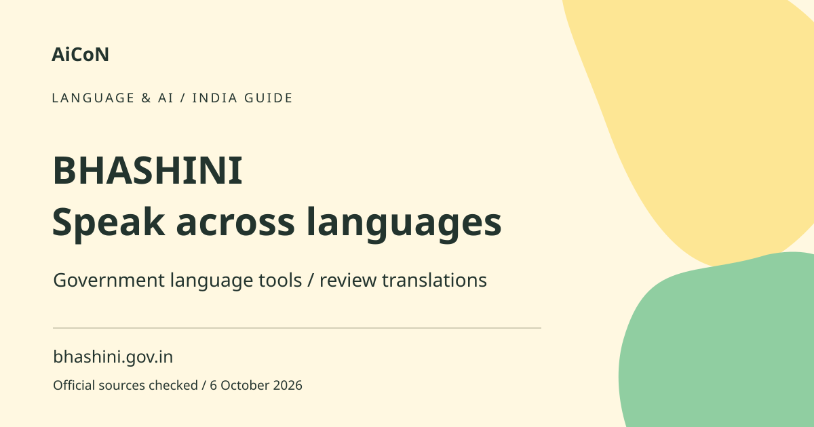

BHASHINI: translate Indian languages with care
BHASHINI is India's National Language Translation Mission. Its app supports voice-to-text, translation and text-to-voice tasks. Select the languages supported by the feature you use and review important output rather than assuming every translation is exact.

What is BHASHINI?
The government site presents a collection of language services and tools, not one identical workflow for every task. The mobile app is aimed at helping people communicate across Indian languages. The broader site also lists document translation, digitisation and developer services. Access to one feature does not prove that every language and capability is available in the app.
Voice, text and conversation explained
Speech-to-text turns spoken words into written words. Translation changes text from one language to another. Text-to-speech reads written text aloud. A conversation flow can combine these steps, but an error early in the chain can affect the final result. Check the recognised words before evaluating the translation, especially for names, numbers and mixed-language speech.
How to use it, step by step
- Begin at bhashini.gov.in and use its mobile-app or translation-service links. Confirm the government publisher before installing.
- Review the current store compatibility and privacy information. The checked Apple listing is by National e-Governance Division and describes the app as free.
- Choose the input and output languages shown for the feature. Do not assume a language appears in every service because it exists elsewhere on the site.
- For text, enter a short, clear sentence. Keep names, amounts and dates easy to recognise.
- For voice, grant microphone access when needed, speak clearly and inspect the recognised text. Correct transcription errors before relying on a translation.
- Read or listen to the output and compare its meaning. Break a complex request into shorter sentences if it becomes unclear.
- For a conversation, let the other person confirm what they understood. Do not treat the generated voice as proof of agreement.
- For documents, check the specific service's accepted format and language pair. Keep a copy of the original and ask a fluent reader to check important passages.
Using it in Kerala
A Malayalam-speaking user may want to communicate with someone using another Indian language. Check the app's current feature list for the exact pair you need. We have not verified every Malayalam mode or tested local accents. Start with ordinary, low-risk conversation and ask a fluent person to review anything that changes a deadline, obligation or payment.
Costs and access limits
The checked Apple app listing describes the app as free. That is not a claim that every API, integration or institutional service on the wider platform is unlimited and free. Mobile data and internet access can still cost money. Review the terms of the specific service before using it for large files or automated processing.
Important translation risks
Idioms, dialects, abbreviations and specialised words may not carry across cleanly. A negative word can change an instruction completely. Numbers and medicine names are especially easy to misread. Keep original text alongside the translation. For legal documents, medical instructions or official applications, use an appropriate qualified or authorised translation process rather than relying only on AI output.
Privacy and accessibility checks
Avoid uploading ID documents, health records or private conversations simply to test the tool. Read what the chosen service says about processing and retention. A voice recording may include other people in the room. Ask before recording them and share only the part needed. Test font display and audio on your device before depending on it for a longer conversation.
What is not promised here
We do not promise offline translation, universal language coverage or flawless speech recognition. The fetched web translator showed a language-loading screen rather than a usable list. App features may change faster than an article. Follow the current interface and verify a small sample before using the service for an important task.
Frequently asked questions
Is BHASHINI a government initiative?
The official site identifies it as the National Language Translation Mission.
Does it support every language in every feature?
Do not assume so. Check the specific mode and language pair.
Is the mobile app free?
The checked Apple listing says free; wider service terms may differ.
Can I use it as a certified translation?
No such certification is established here. Use the process required by the receiving authority.
Official sources
- Official National Language Translation Mission
- Official text-translation portal
- App listing by National e-Governance Division
Checked 6 October 2026. Expanded from an AiCoN short post delivered 6 October 2026. Portal screens and rules can change.